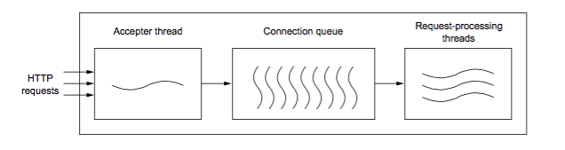
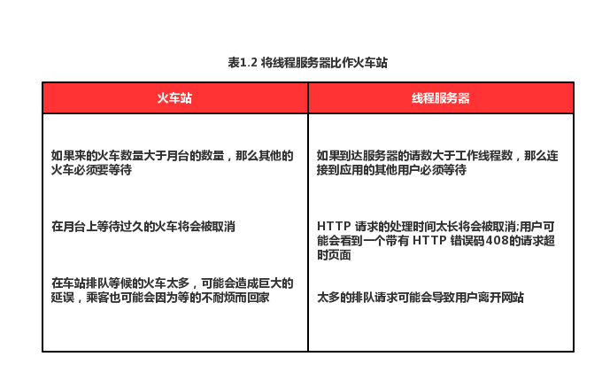
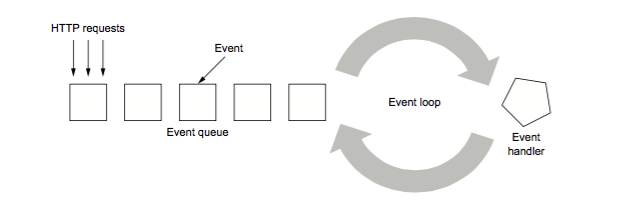

<译> 响应式 Web 应用（三）
原书
1.2 重新思考对计算机资源的利用
要理解为什么要采用响应式应用以及响应式应用时怎样的，我们首先需要快速了解一下计算机方面的知识。计算机在过去的几十年中已经进步了许多。特别是在CPU时钟速度（MHz到GHz）和内存（千字节到千兆字节）方面。然而，CPU 内核的数量在不断变化才是过去几年中发生的最大变化，尽管单个 CPU 的时钟速度没有增加。在撰写本文时，大多数计算机至少有4个 CPU 内核，并且已经有供应商能够提供具有1024个内核的 CPU 了。另一方面，计算机的整体架构以及程序的执行机制尚未放生重大变化。因此，这种架构的一些局限性（比如冯·诺依曼的瓶颈）现在已成为一个问题。 要了解这种演变是如何影响 Web 应用程序开发的，我们需要先来看看两个最受欢迎的 Web 服务器体系结构。
1.2.1 基于线程或者事件的 web 应用服务器
大致来说，有两种可以用来实现 web 服务器的编程模型，分别是线程模型以及事件模型。在线程模型中，大量的线程负责处理传入的请求。在事件模型中，少量的请求处理线程通过消息传递彼此进行通信。响应式 web 应用服务器采用的是事件模型。
基于线程模型的服务器
基于线程的服务器（比如 Apache Tomcat），可以看作是一个有很多个月台的火车站，站长（接收者线程）决定哪列火车（HTTP 请求）到达哪个月台（请求处理线程）。不难看出，有多少个月台，就可以同时接纳多少列火车。下图说明了基于线程的服务器是如何处理 HTTP 请求的。

顾名思义，基于线程的 web 服务器依赖于在队列中尽可能多的使用线程， 关于火车和线程服务器之间的比较如表1.2所示。

基于事件模型的服务器
为了解释事件服务器的工作原理，我们举一个餐厅服务员的例子。
服务员可以从几个顾客那里接收订单，然后将这些订单交给厨房里的多位厨师。服务员将他们的时间分配给手头上的不同任务，而不用花太多时间在某一个任务上面。他们不需要一次性地处理整个订单，比如：先上酒，然后冷盘，接下来主菜，最后是甜点和浓咖啡。因此，服务员可以高效地一次性服务多张桌子。
在我写这本书的时候，Play 是基于 Netty 而构建的。当开发人员用 Play 构建应用的时候，开发人员只需要实现厨师“烹饪”响应的行为，而不用去实现服务员的行为，因为这些 Play 已经帮我们实现了。
基于事件模型的 Web 服务器的机制如下图所示。

在事件服务器中，传入的请求被分割成多个事件，这些事件代表了处理整个请求所涉及到的各种较小的任务。例如解析请求主体，从磁盘检索文件或者调用另外一个 web 服务。分割操作是由事件处理程序来完成的，这可能会触发 I/O 操作，进而产生新的事件。例如，你想发送一个请求来获取服务器上文件的大小。在此种情况下，事件处理程序在处理这个请求的时候将会对磁盘进行异步调用。当操作系统计算出文件大小的时候，会发出一个中断，这个中断也就相当于一个新的事件。当轮到这个新事件执行的时候，你就得到了该请求响应的结果——文件的大小。当操作系统在计算文件大小的时候，事件循环程序可以处理队列中的其他事件。
这种编程模型的一个重要意义就是，在任务上花费的时间应该是很小的。当服务员要上菜的时候，而厨师却坚持要将某一个订单上的全部菜品做完才让服务员去上菜。那么一旦服务员最后从厨房出来，将会看到顾客们一张张生气的面孔。当整个流水线，比如命令或者 HTTP 请求是异步的时候，事件模型才会起作用，她可以使整个流水线能够不被阻塞地去执行。非阻塞 I/O 通常指的是输入-输出操作，这些操作在执行工作时不会占用当前的执行线程，而是在工作完成时发送通知。
在事件模型服务器以及线程模型服务器上内存的利用率
与线程模型相比，基于事件模型的服务器对硬件资源的利用率要高的多。事件服务器的工作线程只需要几个“服务员”线程就可以处理大量的请求而不用再像线程服务器那样，生成成千上万的“火车轨道”了。使用较少数量的线程有两个好处，分别是减少内存占用和改善性能，因为这样做减少了上下文切换、线程管理的时间以及调度开销。
在 JVM 上创建的每个线程都有自己的堆栈空间，默认为 1MB。Apache Tomcat 的默认线程池大小为200，这意味着要启动 Apache Tomcat，需要分配超过 200MB 的内存。但是，你仅仅只需要 16MB 就可以将一个 Play 程序跑起来。虽然 200MB 在现在看来不算是一个很大的内存，但是不要忘了，这意味着要想同时处理200条请求就需要 200MB 的内存（这里我们先不考虑在处理这些请求的时候可能会有额外的任务会占用内存的情况），但是如果你想同时满足10000个请求，那么你将需要大量的内存。这种情况并不总是能够满足的，因为依赖于可用的内存，所以线程模型在面对大规模的并发情况时很难去做扩展。并且，线程模型除了使用大量内存之外，还会使 CPU 的效率降低。